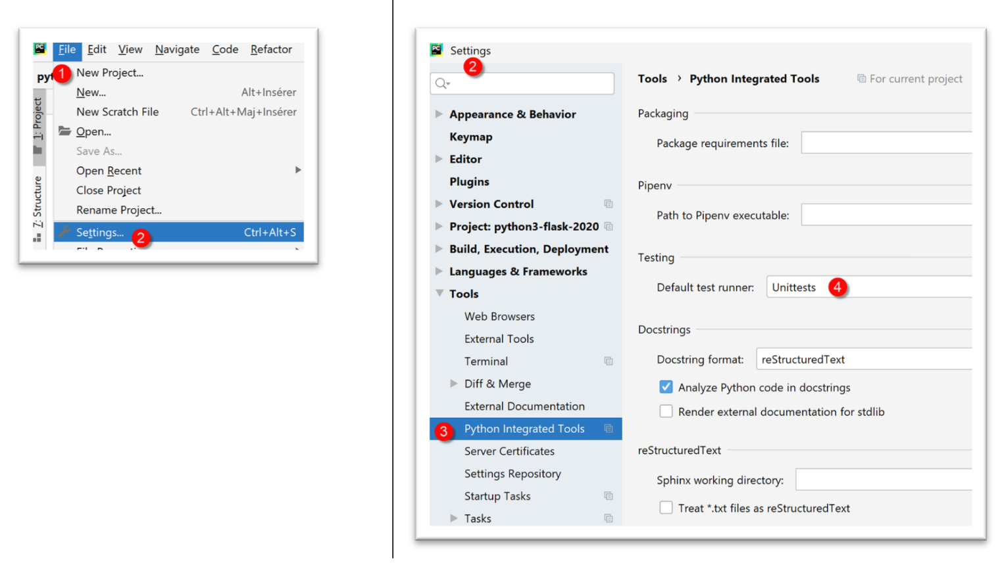
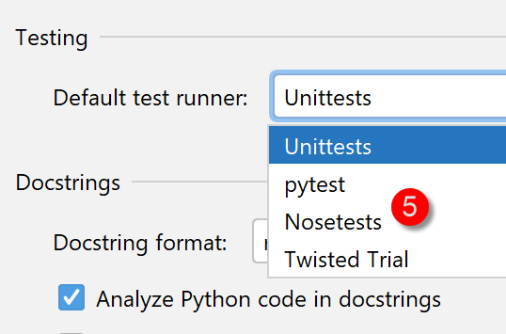
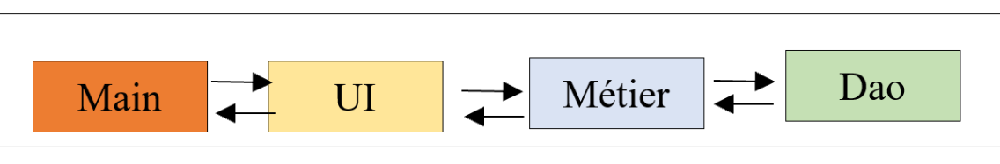

14. Architettura a livelli e programmazione tramite interfacce
14.1. Introduzione
Ci proponiamo di scrivere un’applicazione che consenta di visualizzare i voti degli studenti di una scuola media. Questa applicazione può avere un’architettura a più livelli:

- il livello [ui] (interfaccia utente) è il livello a contatto con l’utente dell’applicazione;
- Il livello [métier] implementa le regole di gestione dell'applicazione, come il calcolo di uno stipendio o di una fattura. Questo livello utilizza i dati provenienti dall'utente tramite il livello [présentation] e quelli provenienti dal SGBD tramite il livello [dao];
- il livello [dao] (Data Access Objects) gestisce l'accesso ai dati del SGBD (Sistema di gestione dei database).
Si tratta dell'architettura utilizzata nel |corso su Python 2|. È inoltre possibile introdurre una variante:

Le differenze rispetto alla precedente struttura a livelli sono le seguenti:
- uno script principale denominato [main], come indicato sopra, organizza l’istanziazione dei livelli;
- gli strati [ui, métier, dao] non comunicano più necessariamente tra loro. Se devono farlo, lo script [main] fornisce loro i riferimenti degli strati di cui hanno bisogno;
Il codice è qui organizzato in centri di competenza con un «direttore d’orchestra»:
- il «direttore d’orchestra» è lo script principale [main];
- i livelli [ui], [dao] e [métier] sono i centri di competenza;
Si potrebbe definire questa organizzazione come un’organizzazione orchestrale.
14.2. Esempio 1
Illustreremo l’architettura a livelli con una semplice applicazione da console:
- non ci sarà alcun database;
- il livello [dao] gestirà le entità Elève, Classe, Matière, Note, consentendo di gestire i voti degli studenti;
- il livello [métier] consentirà di calcolare indicatori relativi ai voti di uno studente specifico;
- il livello [ui] sarà un'applicazione da console che visualizzerà i risultati degli studenti;
Il progetto PyCharm dell'applicazione è il seguente:
 |
Nota: le cartelle in blu fanno parte del progetto [Sources Root] del progetto PyCharm.
14.2.1. Le entità dell'applicazione
Chiameremo «entità» quelle classi il cui unico ruolo è incapsulare i dati. A tal fine si potrebbero utilizzare dei dizionari. L’utilità della classe è quella di consentire di verificare la validità dei dati memorizzati nell’oggetto e di fornire un metodo che restituisca l’identità dell’oggetto sotto forma di stringa di caratteri.
 |
14.2.1.1. L'entità [Classe]
L'entità [Classe] (Classe.py) rappresenta una classe della scuola media:
# importazioni
from BaseEntity import BaseEntity
from MyException import MyException
from Utils import Utils
class Classe(BaseEntity):
# attributi esclusi dallo stato della classe
excluded_keys = []
# proprietà della classe
@staticmethod
def get_allowed_keys() -> list:
# id: identificatore della classe
# nome: nome della classe
return BaseEntity.get_allowed_keys() + ["nom"]
# getter
@property
def nom(self: object) -> str:
return self.__nom
# setter
@nom.setter
def nom(self: object, nom: str):
# il nome deve essere una stringa non vuota
if Utils.is_string_ok(nom):
self.__nom = nom
else:
raise MyException(11, f"Le nom de la classe {self.id} doit être une chaîne de caractères non vide")
Note
- riga 7: l'entità [Classe] deriva dall'entità [BaseEntity] esaminata nel paragrafo |La classe BaseEntity|;
- righe 11-16: una classe è definita da un n. id e da un nom (riga 16). La proprietà [id] è fornita dalla classe [BaseEntity] e il nome dalla classe [Classe];
- righe 18-30: getter/setter dell’attributo [nom];
14.2.1.2. L'entità [Matière]
La classe [Matière] (matière.py) è la seguente:
# importazioni
from BaseEntity import BaseEntity
from MyException import MyException
from Utils import Utils
class Matière(BaseEntity):
# attributi esclusi dallo stato della classe
excluded_keys = []
# proprietà della classe
@staticmethod
def get_allowed_keys() -> list:
# id: identificativo della materia
# nome: nome della materia
# coefficiente: coefficiente della materia
return BaseEntity.get_allowed_keys() + ["nom", "coefficient"]
# getter
@property
def nom(self: object) -> str:
return self.__nom
@property
def coefficient(self: object) -> float:
return self.__coefficient
# setter
@nom.setter
def nom(self: object, nom: str):
# il nome deve essere una stringa non vuota
if Utils.is_string_ok(nom):
self.__nom = nom
else:
raise MyException(21, f"Le nom de la matière {self.id} doit être une chaîne de caractères non vide")
@coefficient.setter
def coefficient(self, coefficient: float):
# il coefficiente deve essere un numero reale >=0
erreur = False
if isinstance(coefficient, (int, float)):
if coefficient >= 0:
self.__coefficient = coefficient
else:
erreur = True
else:
erreur = True
# errore?
if erreur:
raise MyException(22, f"Le coefficient de la matière {self.nom} doit être un réel >=0")
Note
- riga 7: la classe [Classe] deriva dalla classe [BaseEntity];
- righe 11-17: una materia è definita dal suo n. [id], dal suo nome [nom] e dal suo coefficiente [coefficient];
- righe 19-50: getter/setter degli attributi della classe;
14.2.1.3. L'entità [Elève]
La classe [Elève] (élève.py) è la seguente:
# importazioni
from BaseEntity import BaseEntity
from Classe import Classe
from MyException import MyException
from Utils import Utils
class Elève(BaseEntity):
# attributi esclusi dallo stato della classe
excluded_keys = []
# proprietà della classe
@staticmethod
def get_allowed_keys() -> list:
# id: identificativo dello studente
# cognome: cognome dello studente
# nome: nome dello studente
# classe: classe dello studente
return BaseEntity.get_allowed_keys() + ["nom", "prénom", "classe"]
# getters
@property
def nom(self: object) -> str:
return self.__nom
@property
def prénom(self: object) -> str:
return self.__prénom
@property
def classe(self: object) -> Classe:
return self.__classe
# setter
@nom.setter
def nom(self: object, nom: str) -> str:
# il cognome deve essere una stringa non vuota
if Utils.is_string_ok(nom):
self.__nom = nom
else:
raise MyException(41, f"Le nom de l'élève {self.id} doit être une chaîne de caractères non vide")
@prénom.setter
def prénom(self: object, prénom: str) -> str:
# il nome deve essere una stringa non vuota
if Utils.is_string_ok(prénom):
self.__prénom = prénom
else:
raise MyException(42, f"Le prénom de l'élève {self.id} doit être une chaîne de caractères non vide")
@classe.setter
def classe(self: object, value):
try:
# si richiede un tipo Classe
if isinstance(value, Classe):
self.__classe = value
# oppure un tipo "dict"
elif isinstance(value,dict):
self.__classe=Classe().fromdict(value)
# oppure un tipo json
elif isinstance(value,str):
self.__classe = Classe().fromjson(value)
except BaseException as erreur:
raise MyException(43, f"L'attribut [{value}] de l'élève {self.id} doit être de type Classe ou dict ou json. Erreur : {erreur}")
Note
- riga 9: la classe [Elève] deriva dalla classe [BaseEntity];
- righe 13-20: uno studente è identificato dal proprio numero [id], dal proprio cognome [nom], dal proprio nome [prénom] e dalla propria classe [classe]. Quest’ultimo parametro è un riferimento a un oggetto [Classe];
- righe 22-65: getter/setter degli attributi della classe;
14.2.1.4. L'entità [Note]
La classe [Note] (note.py) è la seguente:
# importazioni
from BaseEntity import BaseEntity
from Elève import Elève
from Matière import Matière
from MyException import MyException
class Note(BaseEntity):
# attributi esclusi dallo stato della classe
excluded_keys = []
# proprietà della classe
@staticmethod
def get_allowed_keys() -> list:
# id: identificativo della nota
# valore: il voto stesso
# studente: studente (di tipo Studente) a cui si riferisce il voto
# materia: materia (di tipo Materia) a cui si riferisce il voto
# l’oggetto «Voto» rappresenta quindi il voto di uno studente in una materia
return BaseEntity.get_allowed_keys() + ["valeur", "élève", "matière"]
# getter
@property
def valeur(self: object) -> float:
return self.__valeur
@property
def élève(self: object) -> Elève:
return self.__élève
@property
def matière(self: object) -> Matière:
return self.__matière
# getter
@valeur.setter
def valeur(self: object, valeur: float):
# il voto deve essere un numero reale compreso tra 0 e 20
if isinstance(valeur, (int, float)) and 0 <= valeur <= 20:
self.__valeur = valeur
else:
raise MyException(31,
f"L'attribut {valeur} de la note {self.id} doit être un nombre dans l'intervalle [0,20]")
@élève.setter
def élève(self: object, value):
try:
# si richiede un tipo «Studente»
if isinstance(value, Elève):
self.__élève = value
# oppure un tipo dict
elif isinstance(value, dict):
self.__élève = Elève().fromdict(value)
# oppure un tipo json
elif isinstance(value, str):
self.__élève = Elève().fromjson(value)
except BaseException as erreur:
raise MyException(32,
f"L'attribut [{value}] de la note {self.id} doit être de type Elève ou dict ou json. Erreur : {erreur}")
@matière.setter
def matière(self: object, value):
try:
# si richiede un tipo "Materia"
if isinstance(value, Matière):
self.__matière = value
# o un tipo dict
elif isinstance(value, dict):
self.__matière = Matière().fromdict(value)
# o un tipo json
elif isinstance(value, str):
self.__matière = Matière().fromjson(value)
except BaseException as erreur:
raise MyException(33,
f"L'attribut [{value}] de la note {self.id} doit être de type Matière ou dict ou json. Erreur : {erreur}")
Note
- riga 8: la classe [Note] deriva dalla classe [BaseEntity];
- righe 12-20: un oggetto [Note] è caratterizzato dal proprio n. [id], dal valore del voto [valeur], da un riferimento [élève] allo studente che ha ottenuto tale voto e da un riferimento alla materia [matière] oggetto del voto;
- righe 22-75: getter/setter degli attributi della classe;
14.2.2. Configurazione dell’applicazione
 |
Il file [config.py] configura l’ambiente dello script principale [main] (1) e quello dei test (2). Tutti questi script contengono un’istruzione [import config] all’inizio del codice. Si ricorda che la cartella contenente lo script oggetto del comando [python script] fa automaticamente parte di Python Path.Si; pertanto, poiché [config] si trova nella stessa cartella degli script con l’istruzione [import config], verrà individuato. I file [1] e [2] sono qui identici. Potrebbe non essere così.
Il file [config.sys] è il seguente:
def configure():
import os
# percorso assoluto della cartella contenente questo script
script_dir = os.path.dirname(os.path.abspath(__file__))
# root_dir
root_dir="C:/Data/st-2020/dev/python/cours-2020/python3-flask-2020/classes"
# dipendenze assolute
absolute_dependencies=[
# cartelle locali contenenti classi e interfacce
f"{root_dir}/02/entities",
f"{script_dir}/../entities",
f"{script_dir}/../interfaces",
f"{script_dir}/../services",
]
# aggiornamento del syspath
from myutils import set_syspath
set_syspath(absolute_dependencies)
# si rende la configurazione
return {}
- righe 11-14: le cartelle che devono far parte del Python Path (sys.path);
- la cartella [f"{root_dir}/02/entities"] consente l’accesso alle classi [BaseEntity] e [MyException];
- la cartella [f"{script_dir}/../entities"] consente di accedere alle classi [Elève], [Classe], [Matière], [Note];
- la cartella [f"{script_dir}/../interfaces",] consente di accedere alle interfacce dell’applicazione;
- la cartella [f"{script_dir}/../services"] consente di accedere alle classi che implementano le interfacce;
14.2.3. Test delle entità
 |
Qui scriveremo dei test eseguiti da uno strumento chiamato [unittest]. PyCharm include diversi framework di test. La scelta di uno di essi avviene nella configurazione di PyCharm:

- In [4] sono disponibili diversi framework di test:

14.2.3.1. La classe di test [TestBaseEntity]
Lo script di test [TestBaseEntity] sarà il seguente:
import unittest
# si configura l'applicazione
import config
config = config.configure()
class TestBaseEntity (unittest.TestCase):
def test_note1(self):
# importazioni
from Note import Note
from Elève import Elève
from Classe import Classe
from Matière import Matière
# creazione di una nota a partire da una stringa jSON
note = Note().fromjson(
'{"id": 8, "valore": 12, "studente": {"id": 42, "cognome": "cognome4", "nome": "nome4", "classe": {"id": 2, "nome": "classe2"}}, "materia": {"id": 2, "nome": "materia2", "coefficiente": 2}}')
# verifiche
self.assertIsInstance(note, Note)
self.assertIsInstance(note.élève, Elève)
self.assertIsInstance(note.élève.classe, Classe)
self.assertIsInstance(note.matière, Matière)
def test_note2(self):
# importazioni
from Note import Note
from Elève import Elève
from Classe import Classe
from Matière import Matière
# calcolo di un voto a partire da un dizionario
note = Note().fromdict(
{"id": 8, "valeur": 12, "élève": {"id": 42, "nom": "nom4", "prénom": "prénom4",
"classe": {"id": 2, "nom": "classe2"}},
"matière": {"id": 2, "nom": "matière2", "coefficient": 2}})
# verifiche
self.assertIsInstance(note, Note)
self.assertIsInstance(note.élève, Elève)
self.assertIsInstance(note.élève.classe, Classe)
self.assertIsInstance(note.matière, Matière)
if __name__ == '__main__':
unittest.main()
Note
- riga 1: si importa il modulo [unittest] che fornirà i vari metodi di test;
- righe 3-6: si configura l'applicazione in modo che vengano individuate le classi necessarie per i test;
- riga 9: una classe di test [unittest] deve estendere la classe [unittest.TestCase];
- righe 11, 27: le funzioni di test devono avere un nome che inizi con [test], altrimenti non verranno riconosciute;
- righe 13-16: si importano le classi necessarie;
- in questa classe di test, si vuole verificare il comportamento dei metodi [BaseEntity.fromdict] (riga 34) e [BaseEntity.fromjson] (riga 18). La classe [Note] ha proprietà che sono riferimenti ad altre classi. Si vuole verificare che i due metodi precedenti creino oggetti [Note] validi;
- riga 18: si crea un oggetto [Note] a partire da un oggetto jSON;
- riga 21: si verifica che l’oggetto creato sia effettivamente di tipo [Note]. Il metodo [assertIsInstance] è un metodo della classe [unittest.TestCase], classe padre della classe [TestBaseEntity];
- riga 22: si verifica che [note.élève] sia effettivamente di tipo [Elève];
- riga 23: si verifica che [note.élève.classe] sia effettivamente di tipo [Classe];
- riga 24: si verifica che [note.matière] sia effettivamente del tipo [Matière];
- righe 33-42: si procede allo stesso modo con il metodo [BaseEntity.fromdict];
Esistono diversi modi per eseguire i test:
 |
- in [1-2], si esegue [TestBaseEntity] con il framework [UnitTest];
- in [3-5], i test falliscono. [UnitTests] indica che non ha trovato alcun test da eseguire;
Il fallimento dei test è dovuto all’organizzazione del codice di [TestBaseEntity]:
import unittest
# si configura l'applicazione
import config
config = config.configure()
class TestBaseEntity(unittest.TestCase):
Ciò che crea problemi al framework [UnitTest] è la presenza di codice eseguibile, righe 3-6, prima della definizione della classe di test, riga 9.
Si riorganizza quindi il codice nel modo seguente:
import unittest
class TestBaseEntity(unittest.TestCase):
def setUp(self):
# si configura l'applicazione
import config
config.configure()
def test_note1(self):
…
def test_note2(self):
…
if __name__ == '__main__':
unittest.main()
- righe 6-10: si definisce una funzione [setUp]. Questa funzione ha un ruolo particolare: viene eseguita prima di ogni funzione di test (test_note1, test_note2);
Fatto ciò, l’esecuzione della classe [TestBaseEntity] fornisce i seguenti risultati:
 |
Questa volta entrambi i metodi di test sono stati eseguiti e i test hanno avuto esito positivo.
Vediamo cosa succede quando un test fallisce. Modifichiamo il codice di [test_note1] nel modo seguente:
def test_note1(self):
# errore intenzionale - si verifica che 1==2
self.assertEqual(1,2)
# importazioni
from Note import Note
…
- riga 2: si verifica che 1==2;
I risultati dell’esecuzione sono quindi i seguenti:
 |
È possibile conoscere la causa dell’errore cliccando sul test fallito [2]:
 |
- in [7-8], la causa dell'errore;
Un altro modo per eseguire una classe di test è eseguirla in un terminale:
 |
(venv) C:\Data\st-2020\dev\python\cours-2020\python3-flask-2020\troiscouches\v01\tests>python -m unittest TestBaseEntity.py
..
----------------------------------------------------------------------
Ran 2 tests in 0.026s
OK
La riga 6 indica che entrambi i test hanno avuto esito positivo (è stato eliminato l'errore 1==2);
Infine, un terzo modo per eseguire la classe di test [TestBaseEntity], sempre in un terminale, è il seguente. Si conclude la classe di test con le seguenti righe 6-7;
…
self.assertIsInstance(note.élève.classe, Classe)
self.assertIsInstance(note.matière, Matière)
if __name__ == '__main__':
unittest.main()
- riga 6: la variabile [__name__] è il nome assegnato allo script che viene eseguito. Quando lo script è quello avviato dal comando [python script.py], la variabile [__name__] assume il valore [__main__] (2 caratteri sottolineati prima e dopo l’identificatore). Pertanto, la riga 7 viene eseguita solo quando lo script [TestBaseEntity] viene avviato dal comando [python TestBaseEntity.py]. L’istruzione [unittest.main()] avvia l’esecuzione dello script tramite il framework [UnitTest]. Ecco un esempio:
(venv) C:\Data\st-2020\dev\python\cours-2020\python3-flask-2020\troiscouches\v01\tests>python TestBaseEntity.py
..
----------------------------------------------------------------------
Ran 2 tests in 0.013s
OK
14.2.3.2. La classe di test [TestEntités]
La classe di test [TestEntités] è la seguente:
import unittest
class TestEntités(unittest.TestCase):
def setUp(self):
# si configura l'applicazione
import config
config.configure()
def test_code1a(self):
# importazioni
from Elève import Elève
from MyException import MyException
# codice di errore
code = None
try:
# ID non valido
Elève().fromdict({"id": "x", "nom": "y", "prénom": "z", "classe": "t"})
except MyException as ex:
print(f"\ncode erreur={ex.code}, message={ex}")
code = ex.code
# verifica
self.assertEqual(code, 1)
def test_code41(self):
# importazioni
from Elève import Elève
from MyException import MyException
# codice di errore
code = None
try:
# nome non valido
Elève().fromdict({"id": 1, "nom": "", "prénom": "z", "classe": "t"})
except MyException as ex:
print(f"\ncode erreur={ex.code}, message={ex}")
code = ex.code
# verifica
self.assertEqual(code, 41)
def test_code42(self):
# importazioni
from Elève import Elève
from MyException import MyException
# codice di errore
code = None
try:
# nome non valido
Elève().fromdict({"id": 1, "nom": "y", "prénom": "", "classe": "t"})
except MyException as ex:
print(f"\ncode erreur={ex.code}, message={ex}")
code = ex.code
# verifica
self.assertEqual(code, 42)
def test_code43(self):
# importazioni
from Elève import Elève
from MyException import MyException
# codice di errore
code = None
try:
# classe non valida
Elève().fromdict({"id": 1, "nom": "y", "prénom": "z", "classe": "t"})
except MyException as ex:
print(f"\ncode erreur={ex.code}, message={ex}")
code = ex.code
# verifica
self.assertEqual(code, 43)
def test_code1b(self):
# importazioni
from Classe import Classe
from MyException import MyException
# codice di errore
code = None
try:
# ID non valido
Classe().fromdict({"id": "x", "nom": "y"})
except MyException as ex:
print(f"\ncode erreur={ex.code}, message={ex}")
code = ex.code
# verifica
self.assertEqual(code, 1)
def test_code11(self):
# importazioni
from Classe import Classe
from MyException import MyException
# codice di errore
code = None
try:
# nome non valido
Classe().fromdict({"id": 1, "nom": ""})
except MyException as ex:
code = ex.code
# verifica
self.assertEqual(code, 11)
def test_code1c(self):
# importazioni
from Matière import Matière
from MyException import MyException
# codice di errore
code = None
try:
# ID non valido
Matière().fromdict({"id": "x", "nom": "y", "coefficient": "t"})
except MyException as ex:
print(f"\ncode erreur={ex.code}, message={ex}")
code = ex.code
# verifica
self.assertEqual(code, 1)
def test_code21(self):
# importazioni
from Matière import Matière
from MyException import MyException
# codice di errore
code = None
try:
# nome non valido
Matière().fromdict({"id": "1", "nom": "", "coefficient": "t"})
except MyException as ex:
print(f"\ncode erreur={ex.code}, message={ex}")
code = ex.code
# verifica
self.assertEqual(code, 21)
def test_code22(self):
# importazioni
from Matière import Matière
from MyException import MyException
# codice di errore
code = None
try:
# coefficiente non valido
Matière().fromdict({"id": 1, "nom": "y", "coefficient": "t"})
except MyException as ex:
print(f"\ncode erreur={ex.code}, message={ex}")
code = ex.code
# verifica
self.assertEqual(code, 22)
def test_code1d(self):
# importazioni
from Note import Note
from MyException import MyException
# codice di errore
code = None
try:
# ID non valido
Note().fromdict({"id": "x", "valeur": "x", "élève": "y", "matière": "z"})
except MyException as ex:
print(f"\ncode erreur={ex.code}, message={ex}")
code = ex.code
# verifica
self.assertEqual(code, 1)
def test_code31(self):
# importazioni
from Note import Note
from MyException import MyException
# codice di errore
code = None
try:
# valore non valido
Note().fromdict({"id": 1, "valeur": "x", "élève": "y", "matière": "z"})
except MyException as ex:
print(f"\ncode erreur={ex.code}, message={ex}")
code = ex.code
# verifica
self.assertEqual(code, 31)
def test_code32(self):
# importazioni
from Note import Note
from MyException import MyException
# codice di errore
code = None
try:
# studente non valido
Note().fromdict({"id": 1, "valeur": 10, "élève": "y", "matière": "z"})
except MyException as ex:
print(f"\ncode erreur={ex.code}, message={ex}")
code = ex.code
# verifica
self.assertEqual(code, 32)
def test_code33(self):
# importazioni
from Elève import Elève
from Note import Note
from Classe import Classe
from MyException import MyException
# codice di errore
code = None
try:
# materia non valida
classe = Classe().fromdict({"id": 1, "nom": "x"})
élève = Elève().fromdict({"id": 1, "nom": "a", "prénom": "b", "classe": classe})
Note().fromdict({"id": 1, "valeur": 10, "élève": élève, "matière": "z"})
except MyException as ex:
print(f"\ncode erreur={ex.code}, message={ex}")
code = ex.code
# verifica
self.assertEqual(code, 33)
def test_exception(self):
# importazioni
from Elève import Elève
# per il superamento del test è necessario avviare il tipo [MyException]
from MyException import MyException
with self.assertRaises(MyException):
# il test
Elève().fromdict({"id": "x", "nom": "y", "prénom": "z", "classe": "t"})
if __name__ == '__main__':
unittest.main()
- Lo script di test ha lo scopo di verificare i setter delle classi: verificare che non sia possibile assegnare valori errati agli attributi delle diverse entità;
- righe 11-24: si verifica che non sia possibile assegnare un identificativo non valido a uno studente. Poiché alla riga 16 si assegna il valore 'x' come identificativo dello studente, ci si aspetta che venga generata un'eccezione. Si dovrebbe quindi passare alle righe 20-22;
- riga 21: visualizzazione del messaggio di errore;
- riga 22: si recupera il codice dell’errore (cfr. paragrafo |L’entità MyException|);
- riga 24: si verifica (assert) che il codice di errore sia 1. Qui si verificano due cose:
- che si sia effettivamente verificato un errore;
- che il codice di errore sia 1;
- questo processo viene ripetuto con le funzioni delle righe 24-213;
- righe 215-222: si verifica che un'azione generi un'eccezione di un determinato tipo;
- riga 220: si indica che il test ha esito positivo se genera un'eccezione di tipo [MyException];
Risultati
Si esegue lo script di test:
 |
I risultati ottenuti sono i seguenti:
Testing started at 09:39 ...
C:\Data\st-2020\dev\python\cours-2020\python3-flask-2020\venv\Scripts\python.exe "C:\Program Files\JetBrains\PyCharm Community Edition 2020.1.2\plugins\python-ce\helpers\pycharm\_jb_unittest_runner.py" --path C:/Data/st-2020/dev/python/cours-2020/python3-flask-2020/troiscouches/v01/tests/TestEntités.py
Launching unittests with arguments python -m unittest C:/Data/st-2020/dev/python/cours-2020/python3-flask-2020/troiscouches/v01/tests/TestEntités.py in C:\Data\st-2020\dev\python\cours-2020\python3-flask-2020\troiscouches\v01\tests
code erreur=1, message=MyException[1, L'identifiant d'une entité <class 'Elève.Elève'> doit être un entier >=0]
code erreur=1, message=MyException[1, L'identifiant d'une entité <class 'Classe.Classe'> doit être un entier >=0]
code erreur=1, message=MyException[1, L'identifiant d'une entité <class 'Matière.Matière'> doit être un entier >=0]
code erreur=1, message=MyException[1, L'identifiant d'une entité <class 'Note.Note'> doit être un entier >=0]
code erreur=21, message=MyException[21, Le nom de la matière 1 doit être une chaîne de caractères non vide]
code erreur=22, message=MyException[22, Le coefficient de la matière y doit être un réel >=0]
code erreur=31, message=MyException[31, L'attribut x de la note 1 doit être un nombre dans l'intervalle [0,20]]
code erreur=32, message=MyException[32, L'attribut [y] de la note 1 doit être de type Elève ou dict ou json. Erreur : Expecting value: line 1 column 1 (char 0)]
code erreur=33, message=MyException[33, L'attribut [z] de la note 1 doit être de type Matière ou dict ou json. Erreur : Expecting value: line 1 column 1 (char 0)]
code erreur=41, message=MyException[41, Le nom de l'élève 1 doit être une chaîne de caractères non vide]
code erreur=42, message=MyException[42, Le prénom de l'élève 1 doit être une chaîne de caractères non vide]
code erreur=43, message=MyException[43, L'attribut [t] de l'élève 1 doit être de type Classe ou dict ou json. Erreur : Expecting value: line 1 column 1 (char 0)]
Ran 14 tests in 0.040s
OK
Process finished with exit code 0
In questo caso, tutti i test hanno avuto esito positivo
14.2.4. Il livello [dao]

Il livello [dao] implementa l'interfaccia [InterfaceDao] [1]. Quest'ultima è implementata dalla classe [Dao] (2). Lo script [tests_dao] (3) verifica i metodi del livello [dao].
14.2.4.1. Interfaccia [InterfaceDao]
Un’interfaccia è un contratto stipulato tra il codice chiamante e il codice chiamato. È il codice chiamato a fornire l’interfaccia:
 |
- Il codice chiamante [1] non conosce l'implementazione del codice chiamato [3]. Conosce solo il modo in cui richiamarlo. È l'interfaccia [2] a indicarglielo. Quest'ultima definisce una serie di metodi/funzioni da utilizzare per interagire con il codice chiamato. Questa interfaccia è anche denominata API (Application Programming Interface);
Il livello [dao] fornirà la seguente interfaccia:
- [get_classes] restituisce l’elenco delle classi della scuola media;
- [get_matières] restituisce l'elenco delle materie insegnate nella scuola media;
- [get_élèves] restituisce l'elenco degli studenti della scuola media;
- [get_notes] restituisce l'elenco dei voti di tutti gli studenti;
- [get_notes_for_élève_by_id] restituisce i voti di uno studente specifico;
- [get_élève_by_id] restituisce un alunno identificato dal suo numero;
Il codice chiamante utilizzerà solo questi metodi. Non deve sapere come sono implementati. I dati possono quindi provenire da diverse fonti (hardcoded, da un database, da file di testo…) senza che ciò abbia alcun impatto sul codice chiamante. Questo approccio è noto come programmazione tramite interfacce.
Python 3 dispone di un concetto simile a quello di interfaccia: la classe astratta. La useremo. Raggrupperemo le interfacce di questo esempio nella cartella [interfaces].
Definiamo una classe astratta [InterfaceDao] (InterfaceDao.py) per il livello [dao]:
# importazioni
from abc import ABC, abstractmethod
# interfaccia Dao
from Elève import Elève
class InterfaceDao(ABC):
# elenco delle classi
@abstractmethod
def get_classes(self: object) -> list:
pass
# elenco degli studenti
@abstractmethod
def get_élèves(self: object) -> list:
pass
# elenco delle materie
@abstractmethod
def get_matières(self: object) -> list:
pass
# elenco dei voti
@abstractmethod
def get_notes(self: object) -> list:
pass
# elenco dei voti di uno studente
@abstractmethod
def get_notes_for_élève_by_id(self: object, élève_id: int) -> list:
pass
# cerca uno studente in base al suo ID
@abstractmethod
def get_élève_by_id(self, élève_id: int) -> Elève:
pass
Note:
- riga 2: ABC = Classe base astratta. Dal modulo [abc] vengono importate la classe ABC e il decoratore [abstractmethod] utilizzato alle righe 10, 15, 20, 25, 30 e 35;
- riga 8: la classe astratta si chiama [InterfaceDao] e deriva dalla classe [ABC];
- i metodi della classe astratta sono decorati con il decoratore [@abstractmethod], che rende il metodo così decorato un metodo astratto: il suo codice non è definito. Tuttavia, vi si inserisce del codice: l’istruzione [pass] che non fa nulla;
- la classe astratta [InterfaceDao] non può essere istanziata. Possono esserlo solo le classi derivate da [InterfaceDao] che hanno implementato tutti i metodi di [InterfaceDao]. Se quindi si creano due classi [Dao1] e [Dao2] derivate dalla classe [InterfaceDao], entrambe implementeranno i metodi astratti di [InterfaceDao]. Si potrebbe quindi dire che esse implementano l’interfaccia [InterfaceDao];
- i linguaggi che implementano sia le interfacce che le classi astratte attribuiscono all’interfaccia un ruolo diverso da quello della classe astratta. Un’interfaccia non ha attributi e non può essere istanziata. Una classe può implementare un’interfaccia definendone tutti i metodi;
14.2.4.2. Implementazione [Dao]
La classe [Dao] (dao.py) implementa l’interfaccia [InterfaceDao] nel modo seguente:
# importazione di entità e interfacce
from Classe import Classe
from Elève import Elève
from InterfaceDao import InterfaceDao
from Matière import Matière
from MyException import MyException
from Note import Note
# Il livello [dao] implementa l'interfaccia InterfaceDao
class Dao(InterfaceDao):
# costruttore
# si creano elenchi fissi
def __init__(self):
# si istanziano le classi
classe1 = Classe().fromdict({"id": 1, "nom": "classe1"})
classe2 = Classe().fromdict({"id": 2, "nom": "classe2"})
self.classes = [classe1, classe2]
# le materie
matière1 = Matière().fromdict({"id": 1, "nom": "matière1", "coefficient": 1})
matière2 = Matière().fromdict({"id": 2, "nom": "matière2", "coefficient": 2})
self.matières = [matière1, matière2]
# gli studenti
élève11 = Elève().fromdict({"id": 11, "nom": "nom1", "prénom": "prénom1", "classe": classe1})
élève21 = Elève().fromdict({"id": 21, "nom": "nom2", "prénom": "prénom2", "classe": classe1})
élève32 = Elève().fromdict({"id": 32, "nom": "nom3", "prénom": "prénom3", "classe": classe2})
élève42 = Elève().fromdict({"id": 42, "nom": "nom4", "prénom": "prénom4", "classe": classe2})
self.élèves = [élève11, élève21, élève32, élève42]
# i voti degli studenti nelle diverse materie
note1 = Note().fromdict({"id": 1, "valeur": 10, "élève": élève11, "matière": matière1})
note2 = Note().fromdict({"id": 2, "valeur": 12, "élève": élève21, "matière": matière1})
note3 = Note().fromdict({"id": 3, "valeur": 14, "élève": élève32, "matière": matière1})
note4 = Note().fromdict({"id": 4, "valeur": 16, "élève": élève42, "matière": matière1})
note5 = Note().fromdict({"id": 5, "valeur": 6, "élève": élève11, "matière": matière2})
note6 = Note().fromdict({"id": 6, "valeur": 8, "élève": élève21, "matière": matière2})
note7 = Note().fromdict({"id": 7, "valeur": 10, "élève": élève32, "matière": matière2})
note8 = Note().fromdict({"id": 8, "valeur": 12, "élève": élève42, "matière": matière2})
self.notes = [note1, note2, note3, note4, note5, note6, note7, note8]
# -----------
# interfaccia IDao
# -----------
Note:
- righe 1-7: si importano le entità e l’interfaccia [InterfaceDao];
- riga 11: la classe [Dao] deriva dalla classe astratta [InterfaceDao]. Si dirà che essa implementa l'interfaccia [InterfaceDao];
- riga 14: il costruttore non ha parametri. Crea in modo statico quattro liste:
- righe 15-18: l'elenco delle classi;
- righe 19-22: l'elenco delle materie;
- righe 23-28: l'elenco degli studenti;
- righe 29-38: l'elenco dei voti;
- righe 40-44: implementazione dei metodi dell’interfaccia [Interface Dao]. In questo caso non li definiamo per vedere il messaggio di errore generato da Python;
Un programma di test potrebbe essere il seguente: [tests-dao.py]:
# si configura l'applicazione
import config
config = config.configure()
# istanza del livello [dao]
from Dao import Dao
daoImpl = Dao()
# elenco delle classi
for classe in daoImpl.get_classes():
print(classe)
# elenco delle materie
for matière in daoImpl.get_matières():
print(matière)
# elenco delle classi
for élève in daoImpl.get_élèves():
print(élève)
# elenco dei voti
for note in daoImpl.get_notes():
print(note)
Nota: lo script [tests-dao.py] non è un test [unittest] poiché non contiene metodi il cui nome inizi con [test_].
I commenti sono autoesplicativi. Le righe 11-25 utilizzano l'interfaccia del livello [dao]. Non vi sono ipotesi sull'effettiva implementazione del livello. Alla riga 9 si istanzia il livello [dao].
I risultati dell'esecuzione di questo script sono i seguenti:
C:\Data\st-2020\dev\python\cours-2020\python3-flask-2020\venv\Scripts\python.exe C:/Data/st-2020/dev/python/cours-2020/python3-flask-2020/troiscouches/v01/tests/tests_dao.py
Traceback (most recent call last):
File "C:/Data/st-2020/dev/python/cours-2020/python3-flask-2020/troiscouches/v01/tests/tests_dao.py", line 9, in <module>
daoImpl = Dao()
TypeError: Can't instantiate abstract class Dao with abstract methods get_classes, get_matières, get_notes, get_notes_for_élève_by_id, get_élève_by_id, get_élèves
Process finished with exit code 1
Si nota che si verifica un errore già al momento dell’istanziazione della classe [Dao] (riga 3 sopra). L’interprete Python 3 ci segnala che non è in grado di istanziare la classe, poiché non abbiamo definito i metodi astratti [get_classes, get_matières, get_notes, get_notes_for_élève_by_id, get_élève_by_id, get_élèves].
Anche PyCharm supporta il concetto di classe astratta e ci propone di definirne i metodi:
 |
- in [1], clicca con il tasto destro sul codice;
- in [2-3], selezionare [Generate / Implement Methods] per implementare i metodi mancanti della classe [Dao];
- in [4], selezionare i metodi da implementare, in questo caso tutti;
Fatto ciò, la classe [Dao] viene completata da PyCharm nel modo seguente:
# -----------
# interfaccia IDao
# -----------
def get_classes(self: object) -> list:
pass
def get_élèves(self: object) -> list:
pass
def get_matières(self: object) -> list:
pass
def get_notes(self: object) -> list:
pass
def get_notes_for_élève_by_id(self: object, élève_id: int) -> list:
pass
def get_élève_by_id(self, élève_id: int) -> Elève:
pass
Completiamo la classe [Dao] nel modo seguente:
# -----------
# interfaccia IDao
# -----------
# elenco delle classi
def get_classes(self) -> list:
return self.classes
# elenco delle materie
def get_matières(self) -> list:
return self.matières
# elenco degli studenti
def get_élèves(self) -> list:
return self.élèves
# elenco dei voti
def get_notes(self) -> list:
return self.notes
def get_notes_for_élève_by_id(self, élève_id: int) -> dict:
# ricerca dello studente
élève = self.get_élève_by_id(élève_id)
# si recuperano i suoi voti
notes = list(filter(lambda n: n.élève.id == élève_id, self.get_notes()))
# restituisce il risultato
return {"élève": élève, "notes": notes}
def get_élève_by_id(self, élève_id: int) -> Elève:
# filtrare gli studenti
élèves = list(filter(lambda e: e.id == élève_id, self.get_élèves()))
# Trovato?
if not élèves:
raise MyException(10, f"L'élève d'identifiant {élève_id} n'existe pas")
# risultato
return élèves[0]
- le righe 5-19 non presentano difficoltà;
- righe 29-36: il metodo che restituisce lo studente il cui numero viene passato. Se lo studente non esiste, viene generata un’eccezione;
- riga 31: la funzione [filter] consente di filtrare un elenco:
- il primo parametro è il criterio di filtro;
- il secondo parametro è l’elenco da filtrare, in questo caso l’elenco degli studenti;
- riga 31: il criterio di filtraggio dell’elenco viene implementato tramite una funzione [f(e :Elève)->bool]. Questa viene applicata a ciascuno degli elementi dell’elenco da filtrare. Se l’elemento soddisfa il criterio di filtraggio, viene mantenuto nell’elenco filtrato, altrimenti ne viene escluso. A questo punto è possibile:
- specificare il nome della funzione f e implementarla altrove. La chiamata alla funzione [filter] diventa quindi [filter(f,self.get_élèves()];
- fornire la definizione della funzione f. La chiamata alla funzione [filter] diventa quindi [filter(f(e :Elève){…},self.get_élèves()], dove [e] rappresenta un elemento dell’elenco filtrato, ovvero uno studente. È ciò che è stato fatto in questo caso. La definizione della funzione f in questo caso sarebbe [f(e :Elève){return e.id==élève_id)]: uno studente viene selezionato solo se il numero [id] non è uguale a quello cercato. Una funzione di questo tipo può essere sostituita da una funzione detta lambda: [lambda e: e.id == élève_id]:
- e: rappresenta il parametro della funzione f, in questo caso uno studente. Si può utilizzare il nome che si desidera;
- e.id==élève_id è il criterio di filtraggio: uno studente [e] viene selezionato solo se il suo n. [id] corrisponde a quello cercato;
- riga 31: la funzione [filter] restituisce l’elenco filtrato in un tipo che non è il tipo [list], ma che può essere convertito nel tipo [list]. È ciò che facciamo qui con l’espressione [list(liste filtrée)];
- righe 33-34: se l’elenco filtrato è vuoto, significa che lo studente cercato non esiste. In tal caso viene generata un’eccezione;
- riga 36: se si arriva qui, significa che non si è verificata alcuna eccezione. Si sa quindi di aver recuperato un elenco con un solo elemento (non ci sono due studenti con lo stesso numero [id]). Si restituisce quindi il primo elemento dell’elenco;
- righe 21-27: il metodo [get_notes_for_élève_by_id] deve restituire i voti dello studente a cui è stato passato il numero [id];
- righe 22-23: si inizia cercando lo studente con n. [élève_id] utilizzando il metodo [get_élève_by_id] che abbiamo appena commentato. Se lo studente cercato non esiste, potrebbe verificarsi un'eccezione. Poiché non è presente un blocco try/catch attorno all’istruzione della riga 23, l’eccezione verrà segnalata al codice chiamante. Questo è proprio ciò che si desidera;
- righe 24-25: una volta recuperato lo studente, si recuperano tutti i suoi voti. Lo si fa nuovamente con un filtro:
- il filtro è [filter(critère, self_getnotes()]. L’elenco da filtrare è quindi l’elenco di tutti i voti di tutti gli studenti della scuola media;
- il criterio di filtraggio è espresso tramite una funzione [lambda]: lambda n: n.élève.id == élève_id. Il parametro n è un elemento dell’elenco da filtrare, quindi un voto. Il tipo [Note] ha una proprietà [élève] che rappresenta lo studente a cui appartiene il voto. È quindi necessario che [n.élève.id], che rappresenta il numero di matricola di tale studente, sia uguale al numero dello studente ricercato;
Quindi eseguiamo lo script [tests-dao.py].
# si configura l'applicazione
import config
config = config.configure()
# istanziazione del livello [dao]
from Dao import Dao
daoImpl = Dao()
# elenco delle classi
for classe in daoImpl.get_classes():
print(classe)
# elenco delle materie
for matière in daoImpl.get_matières():
print(matière)
# elenco delle classi
for élève in daoImpl.get_élèves():
print(élève)
# elenco dei voti
for note in daoImpl.get_notes():
print(note)
# un alunno specifico
print(daoImpl.get_élève_by_id(11))
# l'elenco dei suoi voti
dict1 = daoImpl.get_notes_for_élève_by_id(11)
print(f"élève n° 11 = {dict1['élève']}")
for note in dict1["notes"]:
print(f"note de l'élève n° 11 = {note}")
Otteniamo quindi i seguenti risultati:
C:\Data\st-2020\dev\python\cours-2020\python3-flask-2020\venv\Scripts\python.exe C:/Data/st-2020/dev/python/cours-2020/python3-flask-2020/troiscouches/v01/tests/tests_dao.py
{"id": 1, "nom": "classe1"}
{"id": 2, "nom": "classe2"}
{"id": 1, "nom": "matière1", "coefficient": 1}
{"id": 2, "nom": "matière2", "coefficient": 2}
{"id": 11, "nom": "nom1", "prénom": "prénom1", "classe": {"id": 1, "nom": "classe1"}}
{"id": 21, "nom": "nom2", "prénom": "prénom2", "classe": {"id": 1, "nom": "classe1"}}
{"id": 32, "nom": "nom3", "prénom": "prénom3", "classe": {"id": 2, "nom": "classe2"}}
{"id": 42, "nom": "nom4", "prénom": "prénom4", "classe": {"id": 2, "nom": "classe2"}}
{"id": 1, "valeur": 10, "élève": {"id": 11, "nom": "nom1", "prénom": "prénom1", "classe": {"id": 1, "nom": "classe1"}}, "matière": {"id": 1, "nom": "matière1", "coefficient": 1}}
{"id": 2, "valeur": 12, "élève": {"id": 21, "nom": "nom2", "prénom": "prénom2", "classe": {"id": 1, "nom": "classe1"}}, "matière": {"id": 1, "nom": "matière1", "coefficient": 1}}
{"id": 3, "valeur": 14, "élève": {"id": 32, "nom": "nom3", "prénom": "prénom3", "classe": {"id": 2, "nom": "classe2"}}, "matière": {"id": 1, "nom": "matière1", "coefficient": 1}}
{"id": 4, "valeur": 16, "élève": {"id": 42, "nom": "nom4", "prénom": "prénom4", "classe": {"id": 2, "nom": "classe2"}}, "matière": {"id": 1, "nom": "matière1", "coefficient": 1}}
{"id": 5, "valeur": 6, "élève": {"id": 11, "nom": "nom1", "prénom": "prénom1", "classe": {"id": 1, "nom": "classe1"}}, "matière": {"id": 2, "nom": "matière2", "coefficient": 2}}
{"id": 6, "valeur": 8, "élève": {"id": 21, "nom": "nom2", "prénom": "prénom2", "classe": {"id": 1, "nom": "classe1"}}, "matière": {"id": 2, "nom": "matière2", "coefficient": 2}}
{"id": 7, "valeur": 10, "élève": {"id": 32, "nom": "nom3", "prénom": "prénom3", "classe": {"id": 2, "nom": "classe2"}}, "matière": {"id": 2, "nom": "matière2", "coefficient": 2}}
{"id": 8, "valeur": 12, "élève": {"id": 42, "nom": "nom4", "prénom": "prénom4", "classe": {"id": 2, "nom": "classe2"}}, "matière": {"id": 2, "nom": "matière2", "coefficient": 2}}
{"id": 11, "nom": "nom1", "prénom": "prénom1", "classe": {"id": 1, "nom": "classe1"}}
élève n° 11 = {"id": 11, "nom": "nom1", "prénom": "prénom1", "classe": {"id": 1, "nom": "classe1"}}
note de l'élève n° 11 = {"id": 1, "valeur": 10, "élève": {"id": 11, "nom": "nom1", "prénom": "prénom1", "classe": {"id": 1, "nom": "classe1"}}, "matière": {"id": 1, "nom": "matière1", "coefficient": 1}}
note de l'élève n° 11 = {"id": 5, "valeur": 6, "élève": {"id": 11, "nom": "nom1", "prénom": "prénom1", "classe": {"id": 1, "nom": "classe1"}}, "matière": {"id": 2, "nom": "matière2", "coefficient": 2}}
Process finished with exit code 0
Si può notare che quando si visualizza un voto (per gli altri oggetti il procedimento è simile), si ottiene anche:
- lo studente proprietario della nota;
- la materia a cui fa riferimento la nota;
È la funzione [BaseEntity.asdict] a produrre questo risultato (cfr. paragrafo "link").
14.2.5. Il livello [métier]
 |  |
- [InterfaceMétier] è l'interfaccia del livello [métier];
- [Métier] è la classe di implementazione del livello [métier];
- [Testmétier] è una classe di test [UnitTest] della classe [Métier];
14.2.5.1. Interfaccia [InterfaceMétier]
Il livello [métier] implementerà la seguente interfaccia [InterfaceMétier] (InterfaceMétier.py):
# importazioni
from abc import ABC, abstractmethod
from StatsForElève import StatsForElève
# interfaccia di business
class InterfaceMétier(ABC):
# calcolo delle statistiche per uno studente
@abstractmethod
def get_stats_for_élève(self, idElève: int) -> StatsForElève:
pass
- [get_stats_for_élève] restituisce i voti dello studente n. idElève e le relative informazioni: media ponderata, voto più basso, voto più alto. Queste informazioni sono incapsulate in un oggetto di tipo [StatsForElève];
14.2.5.2. L’entità [StatsForElève]
Il tipo [StatsForElève] (StatsForElève.py) che racchiude le statistiche (voti, minimo, massimo, media ponderata) di uno studente è il seguente:
# importazioni
from BaseEntity import BaseEntity
# statistiche relative a uno studente specifico
class StatsForElève(BaseEntity):
# attributi esclusi dal riepilogo della classe
excluded_keys = []
# proprietà della classe
@staticmethod
def get_allowed_keys() -> list:
# id: identificativo del voto
# studente: lo studente in questione
# voti: i suoi voti
# moyennePondérée: la sua media ponderata in base ai coefficienti delle materie
# min: il suo voto minimo
# max: il suo voto massimo
return BaseEntity.get_allowed_keys() + ["élève", "notes", "moyenne_pondérée", "min", "max"]
# toString
def __str__(self) -> str:
# caso dello studente senza voti
if len(self.notes) == 0:
return f"Elève={self.élève}, notes=[]"
# caso dello studente con voti
str = ""
for note in self.notes:
str += f"{note.valeur} "
return f"Elève={self.élève}, notes=[{str.strip()}], max={self.max}, min={self.min}, " \
f"moyenne pondérée={self.moyenne_pondérée:4.2f}"
Note:
- riga 8: la classe [StatsForElève] deriva dalla classe [BaseEntity];
- righe 13-22: le proprietà della classe;
- un identificativo [id] derivante da [BaseEntity];
- lo studente [élève], di cui si incapsulano le statistiche;
- i suoi voti [notes];
- la sua media ponderata [moyenne_pondérée];
- il suo punteggio minimo [min];
- il suo valore massimo [max];
- non vengono definiti getter/setter per questi attributi. Si parte dal presupposto che sia il livello [métier] a creare oggetti di questo tipo e che esso non crei oggetti non validi;
- righe 23-33: la funzione [__str__] restituisce una stringa di caratteri che riporta le proprietà dell’oggetto;
14.2.5.3. L'implementazione [Métier]
L'implementazione [Métier] (Metier.py) dell'interfaccia [InterfaceMétier] sarà la seguente:
# importazioni
from InterfaceDao import InterfaceDao
from InterfaceMétier import InterfaceMétier
from StatsForElève import StatsForElève
class Métier(InterfaceMétier):
# costruttore
def __init__(self, dao: InterfaceDao):
# si memorizza il parametro
self.__dao = dao
# -----------
# interfaccia
# -----------
# indicatori relativi ai voti di uno studente specifico
def get_stats_for_élève(self, id_élève: int) -> StatsForElève:
# Statistiche per lo studente n. idEleve
# id_élève: numero dello studente
# si recuperano i suoi voti con il livello [dao]
notes_élève = self.__dao.get_notes_for_élève_by_id(id_élève)
élève = notes_élève["élève"]
notes = notes_élève["notes"]
# ci si ferma se non ci sono voti
if len(notes) == 0:
# si restituisce il risultato
return StatsForElève().fromdict({"élève": élève, "notes": []})
# elaborazione dei voti dello studente
somme_pondérée = 0
somme_coeff = 0
max = -1
min = 21
for note in notes:
# valore del voto
valeur = note.valeur
# coefficiente della materia
coeff = note.matière.coefficient
# somma dei coefficienti
somme_coeff += coeff
# somma ponderata
somme_pondérée += valeur * coeff
# ricerca del minimo
if valeur < min:
min = valeur
# ricerca del massimo
if valeur > max:
max = valeur
# calcolo degli indicatori mancanti
moyenne_pondérée = float(somme_pondérée) / somme_coeff
# il risultato viene restituito sotto forma di un tipo [StatsForElève]
return StatsForElève(). \
fromdict({"élève": élève, "notes": notes,
"moyenne_pondérée": moyenne_pondérée,
"min": min, "max": max})
Note
- riga 7: la classe [Métier] deriva dalla classe [InterfaceMétier]. Si è preso l’abitudine di dire che essa implementa l’interfaccia [InterfaceMétier];
- righe 9-12: il costruttore riceve come unico parametro un riferimento al livello [dao]. Alla riga 10, si noti che al parametro [dao] è stato assegnato il tipo [InterfaceDao]. Non ci si aspetta un’implementazione specifica, ma semplicemente un’implementazione che rispetti l’interfaccia [InterfaceDao]. In questo caso non ha importanza, poiché Python non terrà conto di questo tipo, ma è buona norma lavorare con le interfacce piuttosto che con implementazioni specifiche. Il codice risulta così più facilmente modificabile;
- righe 19-60: implementazione del metodo [get_stats_for_élève];
- riga 19: il metodo riceve un unico parametro, il numero [idElève] dello studente di cui si desiderano le statistiche;
- riga 24: si richiedono al livello [dao] i voti dello studente. Questa richiesta genera un’eccezione se lo studente non esiste. L’eccezione non viene gestita (assenza di try/catch) e viene quindi segnalata al codice chiamante;
- riga 25: si arriva qui se non si è verificata alcuna eccezione. [notes_élève] è quindi un dizionario con due chiavi [élève, note]:
- riga 25: si recuperano le informazioni sullo studente (il suo nome, la sua classe, …);
- riga 26: si recuperano i suoi voti;
- righe 28-31: si verifica se lo studente ha dei voti. Se non ne ha, non ci sono statistiche da calcolare;
- riga 31: si restituisce un oggetto [StatsForElève] costruito a partire da un dizionario con il metodo [BaseEntity.fromdict];
- righe 33-54: si utilizzano i voti dello studente per calcolare le statistiche richieste. I commenti nel codice dovrebbero essere sufficienti per comprenderlo;
- righe 56-60: si restituisce un oggetto [StatsForElève] costruito a partire da un dizionario con il metodo [BaseEntity.fromdict];
14.2.5.4. Test del livello [métier]
Uno script [UnitTest] del livello [métier] potrebbe essere il seguente (TestMétier.py):
# importazioni
import unittest
class Testmétier(unittest.TestCase):
def setUp(self):
# si configura l'applicazione
import config
config.configure()
def test_statsForEleve11(self):
# importazioni
from Dao import Dao
from Métier import Métier
# si verificano gli indicatori dello studente 11
dao = Dao()
stats_for_élève = Métier(dao).get_stats_for_élève(11)
# visualizzazione
print(f"\nstats={stats_for_élève}")
# verifiche
self.assertEqual(stats_for_élève.min, 6)
self.assertEqual(stats_for_élève.max, 10)
self.assertAlmostEqual(stats_for_élève.moyenne_pondérée, 7.333, delta=1e-3)
if __name__ == '__main__':
unittest.main()
Note
- righe 6-9: la funzione [setUp] viene qui utilizzata per configurare il Python Path del test;
- riga 16: si istanzia il livello [dao];
- riga 17: si istanzia il livello [métier] e si utilizza il suo metodo [get_stats_for_élève] per calcolare le statistiche dello studente n. 11;
- riga 19: si visualizza il risultato [StatsForElève] ottenuto. Poiché [StatsForElève] deriva da [BaseEntity], qui viene visualizzata la stringa jSON di [StatsForElève];
- riga 21: si verifica il voto minimo dello studente;
- riga 22: si verifica il suo voto massimo;
- riga 23: si verifica che la media ponderata sia pari a 7,333 con un'approssimazione di 10⁻³. In generale, non è possibile confrontare i numeri reali in modo esatto poiché, internamente, essi hanno spesso solo una rappresentazione approssimativa;
I risultati del test sono i seguenti:
Testing started at 18:17 ...
C:\Data\st-2020\dev\python\cours-2020\python3-flask-2020\venv\Scripts\python.exe "C:\Program Files\JetBrains\PyCharm Community Edition 2020.1.2\plugins\python-ce\helpers\pycharm\_jb_unittest_runner.py" --path C:/Data/st-2020/dev/python/cours-2020/python3-flask-2020/troiscouches/v01/tests/TestMétier.py
Launching unittests with arguments python -m unittest C:/Data/st-2020/dev/python/cours-2020/python3-flask-2020/troiscouches/v01/tests/TestMétier.py in C:\Data\st-2020\dev\python\cours-2020\python3-flask-2020\troiscouches\v01\tests
Ran 1 test in 0.015s
OK
stats=Elève={"id": 11, "nom": "nom1", "prénom": "prénom1", "classe": {"id": 1, "nom": "classe1"}}, notes=[10 6], max=10, min=6, moyenne pondérée=7.33
Process finished with exit code 0
14.2.6. Lo strato [ui]

- in [1], l'interfaccia del livello [ui];
- in [2], l'implementazione di tale interfaccia;
- in [3], lo script principale dell'applicazione;
14.2.6.1. Interfaccia [InterfaceUi]
L'interfaccia del livello [UI] sarà la seguente:
# importazioni
from abc import ABC, abstractmethod
# interfaccia UI
class InterfaceUi(ABC):
# esecuzione del livello UI
@abstractmethod
def run(self: object):
pass
Note
- righe 9-10: il livello [UI] avrà un solo metodo, [run];
14.2.6.2. L'implementazione [Console]
Il livello [console] è implementato dal seguente script [Console.py]:
# importazioni dei livelli
from InterfaceDao import InterfaceDao
from InterfaceMétier import InterfaceMétier
from InterfaceUi import InterfaceUi
# altre dipendenze
from MyException import MyException
class Console(InterfaceUi):
# costruttore
def __init__(self: object, métier: InterfaceMétier):
# dominio: il livello [métier]
# si memorizzano gli attributi
self.métier = métier
# -----------
# interfaccia
# -----------
def run(self):
# dialogo utente
fini = False
while not fini:
# domanda / risposta
réponse = input("Numéro de l'élève (>=1 et * pour arrêter) : ").strip()
# finito?
if réponse == "*":
break
# L'inserimento è corretto?
ok = False
try:
id_élève = int(réponse, 10)
ok = id_élève >= 1
except ValueError as erreur:
pass
# dato corretto?
if not ok:
print("Saisie incorrecte. Recommencez...")
continue
# calcolo delle statistiche per lo studente selezionato
try:
print(self.métier.get_stats_for_élève(id_élève))
except MyException as erreur:
print(f"L'erreur suivante s'est produite : {erreur}")
- righe 3-5: importazione di tutte le interfacce;
- riga 11: la classe [Console] implementa l'interfaccia [InterfaceUi];
- righe 12-17: il costruttore della classe [Console] riceve come parametro un riferimento al livello [métier]. Si noti che a questo parametro è stato assegnato il tipo [InterfaceMétier] per ricordare che si sta lavorando con interfacce piuttosto che con implementazioni specifiche;
- riga 24: implementazione del metodo [run] dell'interfaccia;
- riga 27: un ciclo che termina quando viene verificata la condizione della riga 31;
- riga 29: immissione di un dato digitato dalla tastiera. La funzione [input] riceve un parametro facoltativo: il messaggio da visualizzare sullo schermo per richiedere l’immissione. Quest’ultima viene sempre recuperata come stringa di caratteri. La funzione [strip] rimuove gli «spazi» che precedono o seguono la stringa;
- righe 34-39: si verifica che l’input, un numero di studente, sia valido. Deve trattarsi di un numero intero >=1. Si ricorda che l’input è stato effettuato come stringa di caratteri;
- riga 36: si tenta di convertire il dato immesso in un numero intero in base 10. La funzione [int] genera un'eccezione se ciò non è possibile;
- riga 37: si arriva a questa riga solo se non si è verificata alcuna eccezione. Si verifica che il numero intero ottenuto sia effettivamente >=1;
- righe 38-39: si gestisce l’eccezione. Se si è verificata un’eccezione, la variabile [ok] della riga 34 è rimasta a [False];
- righe 41-43: se l’inserimento è errato, viene visualizzato un messaggio di errore e si torna all’inizio (riga 43);
- righe 45-48: si calcolano le statistiche dello studente di cui è stato inserito il numero;
- riga 46: si utilizza il metodo [get_stats_for_élève] del livello [métier]. Quest’ultimo genera un’eccezione se lo studente non esiste. L’eccezione viene gestita alle righe 47-48. Si sa che i livelli [dao] e [métier] generano l’eccezione [MyException];
14.3. Lo script principale [main]
Lo script principale [main] è il seguente (main.py):
# si configura l'applicazione
import config
config = config.configure()
# il syspath è configurato - è possibile eseguire le importazioni
from Console import Console
from Dao import Dao
from Métier import Métier
# ----------- livello [console]
try:
# istanziazione del livello [dao]
dao = Dao()
# istanziazione del livello [métier]
métier = Métier(dao)
# istanza del livello [ui]
console = Console(métier)
# esecuzione del livello [console]
console.run()
except BaseException as ex:
# viene visualizzato l'errore
print(f"L'erreur suivante s'est produite : {ex}")
finally:
pass
- righe 1-4: si configura il Python Path dell’applicazione;
- righe 6-9: si importano le classi e le interfacce necessarie;
- riga 14: istanziamento del livello [dao];
- riga 16: istanziazione del livello [métier];
- riga 18: istanziazione del livello [ui];
- riga 20: si avvia la finestra di dialogo con l'utente;
- righe 13-20: normalmente da queste righe non viene generata alcuna eccezione. Quelle che provengono dai livelli [dao] e [métier] vengono intercettate dal livello [Console]. La gestione delle eccezioni è un'arte complessa quando non si conoscono perfettamente i livelli utilizzati (in questo caso non è così). In caso di dubbi, è possibile aggiungere del codice per intercettare qualsiasi tipo di eccezione che possa essere generata dal codice in esecuzione. È ciò che viene fatto qui, righe 21-23. Si intercettano tutte le eccezioni derivanti da [BaseException], ovvero tutte le eccezioni;
- righe 24-25: la clausola [finally] qui non ha alcuna funzione. È presente solo per poter commentare le righe 21-23. Infatti, in modalità debug non è opportuno interrompere le eccezioni. In questo caso, è l’interprete Python a intercettarle e a fornire il numero della riga in cui si è verificata l’eccezione. Un’informazione indispensabile. Quando le righe 21-23 vengono commentate, la presenza delle righe 24-25 consente di avere un try/catch sintatticamente corretto. In loro assenza, Python segnala un errore;
Ecco un esempio di esecuzione:
C:\Data\st-2020\dev\python\cours-2020\python3-flask-2020\venv\Scripts\python.exe C:/Data/st-2020/dev/python/cours-2020/python3-flask-2020/troiscouches/v01/main/main.py
Numéro de l'élève (>=1 et * pour arrêter) : 11
Elève={"id": 11, "nom": "nom1", "prénom": "prénom1", "classe": {"id": 1, "nom": "classe1"}}, notes=[10 6], max=10, min=6, moyenne pondérée=7.33
Numéro de l'élève (>=1 et * pour arrêter) : 1
L'erreur suivante s'est produite : MyException[10, L'élève d'identifiant 1 n'existe pas]
Numéro de l'élève (>=1 et * pour arrêter) : *
Process finished with exit code 0
14.4. Esempio 2
Questo nuovo esempio di architetture a livelli mira a dimostrare i vantaggi della programmazione tramite interfacce. Ciò facilita la manutenzione e il collaudo delle applicazioni. Utilizzeremo nuovamente un’architettura a tre livelli:

Ogni livello verrà implementato in due modi diversi. Vogliamo dimostrare che è possibile modificare facilmente l’implementazione di un livello con un impatto minimo sugli altri.
14.4.1. Il livello [dao]

L’interfaccia [InterfaceDao] è la seguente:
# importazioni
from abc import ABC, abstractmethod
# interfaccia DAO
class InterfaceDao(ABC):
# un unico metodo
@abstractmethod
def do_something_in_dao_layer(self, x: int, y: int) -> int:
pass
- righe 8-10: il metodo [do_something_in_dao_layer] è l’unico metodo dell’interfaccia;
La classe [DaoImpl1] implementa l’interfaccia [InterfaceDao] nel modo seguente:
from InterfaceDao import InterfaceDao
class DaoImpl1(InterfaceDao):
# implementazione InterfaceDao
def do_something_in_dao_layer(self: InterfaceDao, x: int, y: int) -> int:
return x + y
La classe [DaoImpl2] implementa l'interfaccia [InterfaceDao] nel modo seguente:
from InterfaceDao import InterfaceDao
class DaoImpl2(InterfaceDao):
# implementazione InterfaceDao
def do_something_in_dao_layer(self: InterfaceDao, x: int, y: int) -> int:
return x - y
14.4.2. Il livello [métier]

L’interfaccia [InterfaceMétier] è la seguente:
# importazioni
from abc import ABC, abstractmethod
# interfaccia di business
class InterfaceMétier(ABC):
# un unico metodo
@abstractmethod
def do_something_in_métier_layer(self, x: int, y: int) -> int:
pass
- righe 8-10: il metodo [do_something_in_métier_layer] è l'unico metodo dell'interfaccia;
La classe [AbstractBaseMétier] implementa l’interfaccia [InterfaceMétier] nel modo seguente:
# importazioni
from abc import ABC, abstractmethod
from InterfaceDao import InterfaceDao
from InterfaceMétier import InterfaceMétier
class AbstractBaseMétier(InterfaceMétier, ABC):
# proprietà
# __dao è un riferimento sul livello [dao]
@property
def dao(self) -> InterfaceDao:
return self.__dao
@dao.setter
def dao(self, dao: InterfaceDao):
self.__dao = dao
# implementazione dell'interfaccia [InterfaceMétier]
@abstractmethod
def do_something_in_métier_layer(self, x: int, y: int) -> int:
pass
- riga 8: la classe [AbstractBaseMétier] deriva da due classi:
- [InterfaceMétier]: la classe [AbstractBaseMétier] implementa questa interfaccia alle righe 19-22. In realtà si nota che non ha implementato il metodo [do_something_in_métier_layer], che ha dichiarato astratto (riga 20). Spetterà alle classi derivate implementare il metodo;
- [ABC] per poter accedere alle annotazioni [@abstractmethod];
- l’ordine è significativo: se qui lo si inverte, Python genera un errore in fase di esecuzione;
È la prima volta che si utilizza l’ereditarietà multipla (ereditare da più classi). La classe [AbstractBaseMétier] eredita, contemporaneamente, le proprietà delle classi [InterfaceMétier] e [ABC].
- righe 9-17: si definisce la proprietà [dao] che sarà un riferimento al livello [dao];
Un'interfaccia è destinata ad essere implementata. Quando diverse implementazioni condividono delle proprietà, è opportuno inserirle in una classe padre per evitare di duplicarle. È il caso, in questo contesto, della proprietà [dao]. La classe padre è in genere sempre astratta, poiché non è in grado di implementare tutti i metodi dell'interfaccia.
La classe [MétierImpl1] implementa l’interfaccia [InterfaceMétier] nel modo seguente:
from AbstractBaseMétier import AbstractBaseMétier
class MétierImpl1(AbstractBaseMétier):
# implementazione dell'interfaccia [InterfaceMétier]
def do_something_in_métier_layer(self:AbstractBaseMétier, x: int, y: int) -> int:
x += 1
y += 1
return self.dao.do_something_in_dao_layer(x, y)
- riga 4: la classe [MétierImpl1] deriva dalla classe [AbstractbaseMétier]. Eredita quindi la proprietà [dao] da questa classe;
- righe 6-9: implementazione dell'interfaccia [InterfaceMétier] che non è stata implementata dalla classe padre [AbstractbaseMétier];
- riga 9: si utilizza il livello [dao];
La classe [MétierImpl2] implementa l'interfaccia [InterfaceMétier] in modo analogo:
from AbstractBaseMétier import AbstractBaseMétier
class MétierImpl2(AbstractBaseMétier):
# implementazione dell'interfaccia [InterfaceMétier]
def do_something_in_métier_layer(self:AbstractBaseMétier, x: int, y: int) -> int:
x -= 1
y -= 1
return self.dao.do_something_in_dao_layer(x, y)
14.4.3. Il livello [ui]

L’interfaccia [InterfaceUi] è la seguente:
# importazioni
from abc import ABC, abstractmethod
# interfaccia Ui
class InterfaceUi(ABC):
# un unico metodo
@abstractmethod
def do_something_in_ui_layer(self, x: int, y: int) -> int:
pass
- righe 8-10: l'unico metodo dell'interfaccia;
La classe [AbstractBaseUi] implementa l'interfaccia [InterfaceUi] nel modo seguente:
# importazioni
from abc import ABC, abstractmethod
from InterfaceMétier import InterfaceMétier
from InterfaceUi import InterfaceUi
class AbstractBaseUi(InterfaceUi, ABC):
# proprietà
# il business è un riferimento sul livello [métier]
@property
def métier(self) -> InterfaceMétier:
return self.__métier
@métier.setter
def métier(self, métier: InterfaceMétier):
self.__métier = métier
# implementazione dell'interfaccia [InterfaceUI]
@abstractmethod
def do_something_in_ui_layer(self: InterfaceUi, x: int, y: int) -> int:
pass
- la classe [AbstractBaseUi] è una classe astratta (riga 20). Dovrà essere derivata per implementare l’interfaccia [InterfaceUi];
- righe 9-17: la classe [AbstractBaseUi] possiede un riferimento al livello [métier];
La classe di implementazione [UiImpl1] è la seguente:
from AbstractBaseUi import AbstractBaseUi
class UiImpl1(AbstractBaseUi):
# implementazione dell'interfaccia [InterfaceUi]
def do_something_in_ui_layer(self: AbstractBaseUi, x: int, y: int) -> int:
x += 1
y += 1
return self.métier.do_something_in_métier_layer(x, y)
- riga 4: la classe [UiImpl1] deriva dalla classe [AbstractBaseUi] e ne eredita quindi la proprietà [métier]. Quest’ultima viene utilizzata alla riga 9;
La classe di implementazione [UiImpl2] è analoga:
from AbstractBaseUi import AbstractBaseUi
class UiImpl2(AbstractBaseUi):
# implementazione dell'interfaccia [InterfaceUi]
def do_something_in_ui_layer(self: AbstractBaseUi, x: int, y: int) -> int:
x -= 1
y -= 1
return self.métier.do_something_in_métier_layer(x, y)
- riga 4: la classe [UiImpl2] deriva dalla classe [AbstractBaseUi] e ne eredita quindi la proprietà [métier]. Questa viene utilizzata alla riga 9;
14.4.4. I file di configurazione

- i file [config1, config2] configurano l’applicazione in due modi diversi;
- il file [main] è lo script principale dell’applicazione;
Il file [config1] è il seguente:
def configure():
# fase 1 ------
# percorso assoluto della cartella di questo script
import os
script_dir = os.path.dirname(os.path.abspath(__file__))
# dipendenze
absolute_dependencies = [
# cartelle locali del Python Path
f"{script_dir}/../dao",
f"{script_dir}/../ui",
f"{script_dir}/../métier",
]
# si configura il syspath
from myutils import set_syspath
set_syspath(absolute_dependencies)
# fase 2 ------
# configurazione dei livelli dell'applicazione
from DaoImpl1 import DaoImpl1
from MétierImpl1 import MétierImpl1
from UiImpl1 import UiImpl1
# istanziazione dei livelli
# DAO
dao = DaoImpl1()
# logica di business
métier = MétierImpl1()
métier.dao = dao
# interfaccia utente
ui = UiImpl1()
ui.métier = métier
# si inseriscono le istanze dei livelli nella configurazione
# qui è necessario solo il livello ui
config = {"ui": ui}
# si genera la configurazione
return config
- righe 2-16: configurazione del Python Path dell’applicazione;
- righe 18-31: istanziamento dei livelli [dao, métier, ui]. Per implementarne le interfacce, si sceglie ogni volta la prima implementazione creata;
- righe 33-35: si inseriscono i riferimenti ai livelli nella configurazione. In questo caso, lo script principale necessita solo del livello [ui];
Il file [config2] è analogo e implementa ciascuna interfaccia con la seconda implementazione disponibile:
def configure():
# fase 1 ---
# percorso assoluto della cartella di questo script
import os
script_dir = os.path.dirname(os.path.abspath(__file__))
# dipendenze
absolute_dependencies = [
# cartelle locali del Python Path
f"{script_dir}/../dao",
f"{script_dir}/../ui",
f"{script_dir}/../métier",
]
# si configura il syspath
from myutils import set_syspath
set_syspath(absolute_dependencies)
# fase 2 ------
# configurazione dei livelli dell'applicazione
from DaoImpl2 import DaoImpl2
from MétierImpl2 import MétierImpl2
from UiImpl2 import UiImpl2
# istanziazione dei livelli
# DAO
dao = DaoImpl2()
# logica di business
métier = MétierImpl2()
métier.dao = dao
# interfaccia utente
ui = UiImpl2()
ui.métier = métier
# si inseriscono le istanze dei livelli nella configurazione
# qui è necessario solo il livello ui
config = {"ui": ui}
# si genera la configurazione
return config
14.4.5. Lo script principale [main]
Lo script principale è il seguente:
# importazioni
import importlib
import sys
# main ---------
# sono necessari due argomenti
nb_args = len(sys.argv)
if nb_args != 2 or (sys.argv[1] != "config1" and sys.argv[1] != "config2"):
print(f"Syntaxe : {sys.argv[0]} config1 ou config2")
sys.exit()
# configurazione dell'applicazione
module = importlib.import_module(sys.argv[1])
config = module.configure()
# esecuzione del livello [ui]
print(config["ui"].do_something_in_ui_layer(10, 20))
Questo script riceve un parametro:
- [config1] per utilizzare la configurazione n. 1;
- [config2] per utilizzare la configurazione n. 2;
Python salva i parametri in una lista denominata [sys.argv]:
- sys.argv[0] è il nome dello script, in questo caso [main]. Questo parametro è sempre presente;
-
sys.argv[1] è il primo parametro passato allo script, sys.argv[2] il secondo, …
-
riga 8: si recupera il numero di parametri;
- righe 9-11: si verifica che sia presente un parametro e che il suo valore sia [config1] oppure [config2]. In caso contrario, viene visualizzato un messaggio di errore (riga 10) e si esce dal programma (riga 11);
Una volta individuata la configurazione desiderata, occorre eseguirla. Ad esempio, se è stata scelta la configurazione 1, occorre eseguire il codice:
Il problema in questo caso è che la configurazione da utilizzare si trova in una variabile, la variabile [sys.argv[1]. Per importare un modulo il cui nome è contenuto in una variabile, dobbiamo utilizzare il pacchetto [importlib] (riga 2).
- riga 14: si importa il modulo il cui nome è contenuto in [sys.argv[1];
- riga 15: fatto ciò, si esegue la funzione [configure] di questo modulo. Si recupera un dizionario [config] che rappresenta la configurazione dell’applicazione;
- riga 18: sappiamo che in config[‘ui’] è presente un riferimento al livello [ui]. Lo utilizziamo per chiamare il metodo [do_something_in_ui_layer]. Sappiamo che questo metodo richiamerà un metodo del livello [métier], il quale a sua volta richiamerà un metodo del livello [dao];
Ad esempio, la funzione [do_something_in_ui_layer] è la seguente:
class UiImpl1(AbstractBaseUi):
# implementazione dell'interfaccia [InterfaceUi]
def do_something_in_ui_layer(self: AbstractBaseUi, x: int, y: int) -> int:
x += 1
y += 1
return self.métier.do_something_in_métier_layer(x, y)
- la riga 6 sopra riportata utilizza la proprietà [métier] della classe [UiImpl1], riga 1. Tuttavia, nella configurazione [config1] è stato scritto:
# funzionalità
métier = MétierImpl1()
métier.dao = dao
# interfaccia utente
ui = UiImpl1()
ui.métier = métier
- riga 6: la proprietà [métier] di [UIImpl1] è un riferimento alla classe [MétierImpl1] (riga 2). Pertanto, verrà eseguito il metodo [do_something_in_ui_layer] della classe [MétierImpl1];
Nella classe [MétierUiImpl1] è scritto:
class MétierImpl1(AbstractBaseMétier):
# implementazione dell'interfaccia [InterfaceMétier]
def do_something_in_métier_layer(self: AbstractBaseMétier, x: int, y: int) -> int:
x += 1
y += 1
return self.dao.do_something_in_dao_layer(x, y)
- alla riga 6, il metodo chiamato dal livello [ui] a sua volta chiama un metodo della proprietà [dao] della classe [MétierImpl1];
Tuttavia, nella configurazione [config1], è stato scritto:
# DAO
dao = DaoImpl1()
# business
métier = MétierImpl1()
métier.dao = dao
- riga 5: la proprietà [MétierImpl1.dao] è di tipo [DaoImpl1] (riga 2);
Ciò che si vuole dimostrare qui è che lo script [main] non deve occuparsi dei livelli [métier] e [dao]. Deve occuparsi solo del livello [ui], poiché i collegamenti tra questo livello e gli altri sono stati creati tramite configurazione.

Per passare il parametro [config1] o [config2] allo script [main], si procederà nel modo seguente:

- in [1-2], si crea quella che viene chiamata una configurazione di esecuzione;
- in [3], si assegna un nome a questa configurazione per poterla ritrovare;
- in [4], si seleziona lo script da eseguire. Se si è seguita la procedura [1-2], lo script corretto è già stato selezionato;
- in [5], qui si inseriscono i parametri da trasmettere allo script. Qui si passa la stringa [config1] per richiedere allo script di utilizzare la configurazione n. 1;
- in [6], si conferma la configurazione di esecuzione;

- in [1-2], si richiede la visualizzazione dei contesti di esecuzione esistenti;
- in [3], si seleziona il contesto di esecuzione esistente e lo si duplica in [4];

- in [5], si assegna un nome alla nuova configurazione. Sarà questa a eseguire lo script [main] [6] passandole il parametro [config2] [7];
Le configurazioni di esecuzione sono disponibili in alto a destra nella finestra PyCharm:

È sufficiente selezionare [2] o [3], quindi premere [4] per eseguire lo script [main] conuno dei due parametri [config1] o [config2].
Con [config1], l’esecuzione di [main] fornisce i seguenti risultati:
C:\Data\st-2020\dev\python\cours-2020\python3-flask-2020\venv\Scripts\python.exe C:/Data/st-2020/dev/python/cours-2020/python3-flask-2020/troiscouches/v02/main/main.py config1
34
Process finished with exit code 0
Con [config2], l’esecuzione di [main] produce i seguenti risultati:
C:\Data\st-2020\dev\python\cours-2020\python3-flask-2020\venv\Scripts\python.exe C:/Data/st-2020/dev/python/cours-2020/python3-flask-2020/troiscouches/v02/main/main.py config2
-10
Process finished with exit code 0
Si invita il lettore a verificare questi risultati.